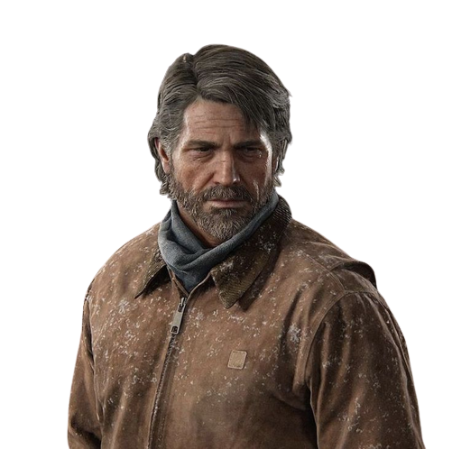

O que torna Ellie especial é a sua imunidade ao fungo Cordyceps, que transforma as pessoas nos terríveis infectados. Mesmo tendo sido mordidas há semanas, a garota não demonstra nenhuma mudança física. Por este motivo, Joel aceitou a missão de escoltá-la em segurança até um laboratório especial dos Vagalumes, onde a garota pode ser a chave para desenvolver uma cura para os Infectados.
Depois de perder sua filha, Joel passou por um momento muito sombrio, chegando ao ponto de considerar suicídio. Sua alma entrou em uma espiral autodestrutiva, abandonando todo resquício de humanidade para conseguir sobreviver. Por um tempo, viveu como um caçador, uma pessoa que mata brutalmente inocentes que cruzam seu caminho para roubar seus suprimentos.